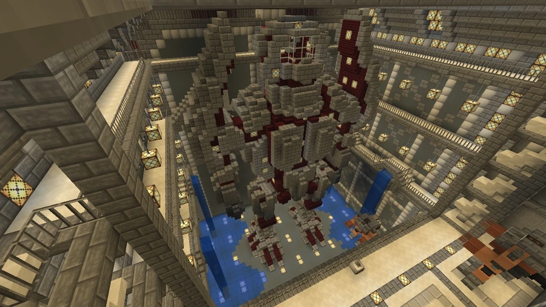

Broific Rim
The community name for a program of giant machines confronting marine threats. The map records the name Brother Spectrum Mk. 2.
Defense against giant threats
Broific Rim is the community name for the program dedicated to designing, building, and deploying giant robots against colossal monsters emerging from an underwater breach. The map records the name Brother Spectrum Mk. 2; budget figures and the broader military history belong to the program’s community narrative. In that account, Broific Rim is presented as Broville’s most expensive security program, consuming roughly 4% to 11% of GDP during the initial crisis and forming a pillar of local defense alongside Fort Bulwark.
The program’s role is to confront exceptionally large threats. The BVS fleet handles conventional threats, while Broific Rim’s machines are intended to fight giant creatures and protect the coastline and infrastructure.



The breach and the response
The program’s origins are associated with the appearance of a Latency breach on the ocean floor, beneath a glacier south of Broville. Emerging monsters are said to have prompted the authorities to fund an urgent, large-scale response.
After years of effort and considerable losses, the breach reportedly became dormant, sharply reducing the frequency and intensity of appearances. It was reportedly never completely closed: residual activity explains why the program continues, although at a reduced level.
The Brother Spectrum machines
Engineers and scientists developed a first generation of giant robots. Brother Spectrum MK1 is described as that generation’s most powerful and imposing machine, with its performance still partially classified. Wreckage scattered across the territory is interpreted as evidence of devastating battles.
An MK1 foot in the jungle is a relic of this period. By comparison, Brother Spectrum MK2 is estimated to be two to three times smaller. The destruction of MK1 models is cited as one reason for the transition to MK2.
As the breach stabilized, corporate funders gradually reduced their contributions, considering such massive investment less necessary. The program is described as having only one remaining operational MK2, kept at a secret base near Fort Bulwark; operational here does not mean active in the scene shown.
Wreckage and material recovery
Fragments of early units are considered rare and scattered across Broville and its surroundings. Two major remains are identified:
- An MK1 foot in the jungle.
- An MK2 head at the edge of the breach. The scarcity of other wreckage is attributed to material recovery programs run by Metalus.
Funding and maintenance
|
Period |
Reported situation |
Estimated budget |
|---|---|---|
|
Initial crisis, with the breach active |
Maximum threat and first-generation MK units |
About 4% to 11% of GDP |
|
Breach stabilization |
Transition to MK2, partly because of MK1 destruction |
Decreasing |
|
Apparent dormancy |
Only one remaining operational MK2 |
Heavily reduced |
See also
Sources and references
- v11.4.4 maps, signs, books and items World records
- Broific Rim · Broville Wiki Community archive
Text adapted and expanded from Broific Rim (contributors and history, revision 5027). Adapted text is available under CC BY-SA 3.0.